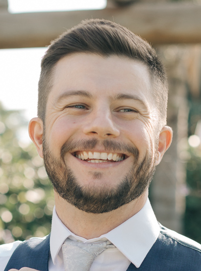

Pedro Waldenmeier

Linkedin Profile
Professional Sumary
Detail-oriented IT professional with solid background analyzing and improving organizational
computer systems. Systematically assesses current hardware, software, and processes to identify
strengths and weaknesses. History of training users and improving procedures to reduce
inefficiencies and capitalize on new capabilities.
Skills
- Assessed risks to systems to meet quality, security and compliance requirements.
- Developed procedural manuals and trained users on system requirements.
- Prepared charts, diagrams and flowcharts to help with system issue analysis.
- Wrote and modified programs as necessary to meet user needs.
- Identified computer software or hardware needs required to set up or alter systems.
- Trained employees on how to work with optimized systems and fully capitalize on available resources.
Experience
Systems Analyst, Totvs S/A, November 2021 – Current, Ribeirão Preto, São Paulo, Brazil
- Developed procedural manuals and trained users on system requirements.
- Assessed risks to systems to meet quality, security and compliance requirements.
- Communicated with users and conducted studies to formulate solutions.
- Identified gaps with current technology processes to recommend changes to support SLAs.
- Executed complex migrations, upgrades, installations and configurations.
- Prepared system flow diagrams to analyze equipment configuration.
- Trained employees on how to work with optimized systems and fully capitalize on available resources.
- Provided technical support, assistance and information to users.
Technician, Happening Empreendimentos, January 2015 to November 2021 Sertãozinho, São Paulo, Brazil
- Trained users in proper use and care of computers to reduce and eliminate potentially damaging errors.
- Set up computers, installed hardware and configured settings for customers.
- Checked PCs and laptops to troubleshoot, trace, and resolve customer issues.
- Removed viruses and unwanted software from desktop operating systems using logical and systematic processes.
- Installed new office wiring, telephones and devices for employee use.
- Developed and executed customized data recovery strategies to retrieve critical data from damaged or corrupted systems.
- Researched and tested new hardware and software to keep current with technological developments.
- Added new hardware, software, security patches, and other updates to improve functionality computer systems.
- Installed and configured network printers and other peripherals.
- Repaired and updated network cables for maximum speed and performance.
- Installed and configured video conferencing equipment, cameras, and image transmission devices.
- Answered user questions via phone, email, and chat, assisting in fixing computer problems.
Education
High School Diploma
Bruno Pieroni - Sertãozinho, São Paulo, Brazil
Technician Information Technology Management
Universidade de Franca - UNIFRAN - Ribeirão Preto, São Paulo, Brazil
Crystal Reports
Datapar - Itu, São Paulo, Brazil
Avalon QQP Methodology Training
Avalon School - London, England
Languages
- English - Intermediate
- Portuguese - Native
- Spanish - Conversational